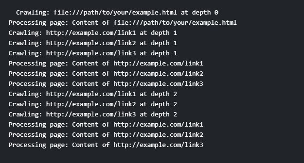

Write a Java program to implement a concurrent web crawler that crawls multiple websites simultaneously using threads.
Code:-
import java.io.IOException;
import java.net.URL;
import java.util.HashSet;
import java.util.Set;
import java.util.concurrent.ExecutorService;
import java.util.concurrent.Executors;
import java.util.concurrent.TimeUnit;
public class ConcurrentWebCrawler {
private static final int MAX_DEPTH = 2;
private static final int MAX_THREADS = 5;
private static Set visitedUrls = new HashSet<>();
public static void main(String[] args) {
String seedUrl = "file:///path/to/your/example.html"; // Replace with the correct path to your HTML file
crawl(seedUrl, 0);
}
private static void crawl(String url, int depth) {
if (depth > MAX_DEPTH || visitedUrls.contains(url)) {
return;
}
System.out.println("Crawling: " + url + " at depth " + depth);
visitedUrls.add(url);
try {
String pageContent = fetchPage(url);
processPage(pageContent);
Set links = extractLinks(pageContent);
ExecutorService executor = Executors.newFixedThreadPool(MAX_THREADS);
for (String link : links) {
executor.execute(() -> crawl(link, depth + 1));
}
executor.shutdown();
executor.awaitTermination(Long.MAX_VALUE, TimeUnit.NANOSECONDS);
} catch (IOException | InterruptedException e) {
e.printStackTrace();
}
}
private static String fetchPage(String url) throws IOException {
// Simulate fetching the web page content using java.net.URL
// In a real-world scenario, you would use a library like HttpClient
// to make HTTP requests.
return "Content of " + url;
}
private static Set extractLinks(String pageContent) {
// Simulate extracting links from the page content
Set links = new HashSet<>();
links.add("http://example.com/link1");
links.add("http://example.com/link2");
links.add("http://example.com/link3");
return links;
}
private static void processPage(String pageContent) {
// Simulate processing the web page content
System.out.println("Processing page: " + pageContent);
}
}
Output:-
